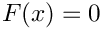
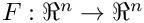
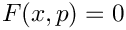
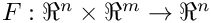

NOX & LOCA: Object-Oriented Nonlinear Solver and Continuation Packages
Introduction
NOX is short for Nonlinear Object-Oriented Solutions, and its objective is to enable the robust and efficient solution of the equation: , where . NOX implements a variety of Newton-based globalization techniques including Line Search and Trust Region algorithms. In additon it provides higher and lower order models using Broyden and Tensor algorithms. Special algorithms have been developed for use with inexact linear solvers such as Krylov subspace techniques. NOX is designed to work with any linear algebra package and to be easily customized. NOX is part of Sandia's Trilinos project.
LOCA, distributed as part of NOX, is short for Library of Continuation Algorithms, and its objective is to compute families of solutions to  and their bifurcations, where . For LOCA specific information, see LOCA Overview.
NOX and LOCA are packaged and released as part of the Trilinos Solver Framework. You may download NOX (which includes LOCA) by downloading a copy of Trilinos. Please see the Trilinos downloads page for the latest releases.